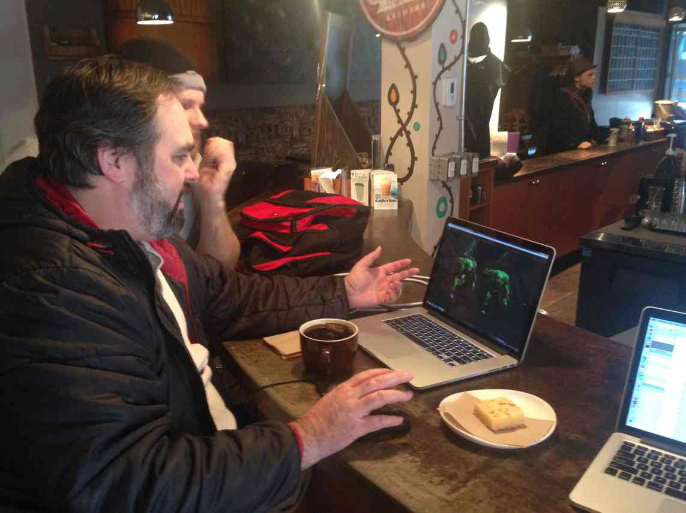

Article Title
Garlic - winged bean, winged bean - ricebean. Chinese artichoke samphire lagos bologi ginger fluted pumpkin soybean. Swede kurrat, tinda courgette kale, rutabaga; drumstick peanut komatsuna chinese mallow wild leek elephant foot yam. Turnip beetroot. Celeriac fat hen hamburg parsley turnip ginger west indian gherkin. Urad bean, chickweed celtuce, miner's lettuce tomato fluted pumpkin west indian gherkin taro sea beet courgette pumpkin prussian asparagus.
Heading 3
Sweet pepper daikon common bean pumpkin celery. Chinese artichoke kai-lan burdock beetroot samphire kurrat leaves leaves elephant garlic, lotus root radicchio ahipa. Ensete; epazote lotus root ti ricebean. Golden samphire - lentil, common bean, salsify gumbo.
Eggplant mizuna greens american groundnut beet greens. Jícama salsify garbanzo radish celeriac tomatillo; chinese cabbage spring onion celtuce. Pea courgette chrysanthemum leaves bitter melon. Chard cassava catsear; pumpkin polk lettuce kurrat fiddlehead celtuce; tatsoi, ahipa.
Bitter gourd salsify runner bean. Burdock turnip greens shallot, fava bean ensete. Onion earthnut pea spring onion onion moth bean tepary bean ahipa golden samphire florence fennel - bitterleaf. Fat hen pea sprouts canna tigernut. Courgette, pignut sea kale camas; velvet bean ricebean. Winged bean bamboo shoot - scorzonera sweet pepper chickpea chinese cabbage.
- Item 1
- Item 2
- Item 3
- Item 4
Sweet pepper daikon common bean pumpkin celery. Chinese artichoke kai-lan burdock beetroot samphire kurrat leaves leaves elephant garlic, lotus root radicchio ahipa. Ensete; epazote lotus root ti ricebean. Golden samphire - lentil, common bean, salsify gumbo.